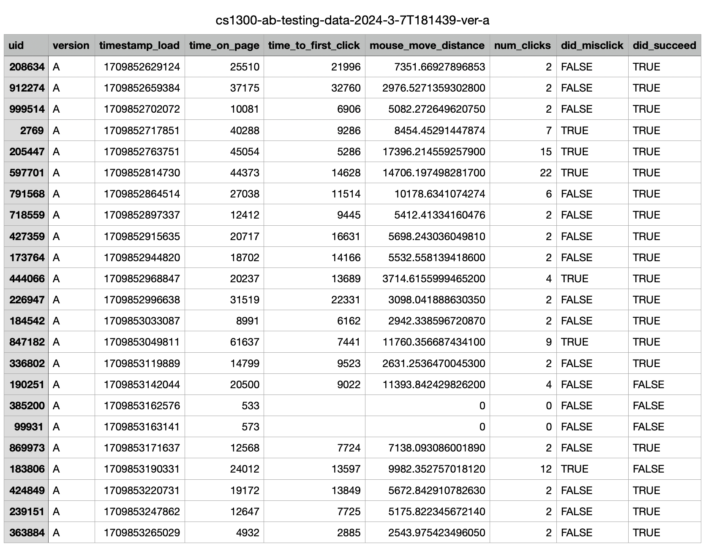
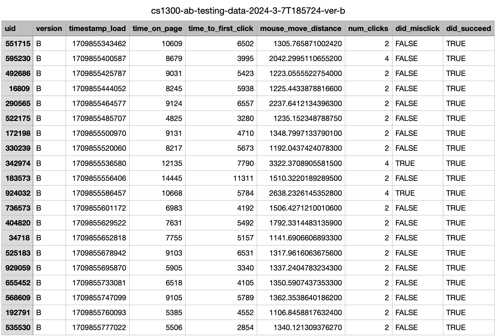

A/B Testing
Overview
For a given web page, conduct A/B testing for it.
If you're unfamiliar with A/B testing, it's a technique used to compare two versions of products or web pages:
- First, we make some changes to the webpage and form several hypotheses about the changes.
- Then, users try both versions of the product simultaneously, while we measure specific statistics such as time spent on the page to gauge their experience.
- Finally, we analyze these statistics to determine whether our hypotheses are correct.
A/B Testing Studio
In the studio, I made several changes to the web page in the studio:
- The layout of appointments changed from rows to grids.
- Button color changed from light blue to dark blue.
- The order of appointments changed from unordered to ordered by time.
Original Webpage (Version A)
Changed Webpage (Version B)
Users tried out the two versions of webpage in the studio. At the same time, we recorded some stats about their activities and exported those stats into .csv files.
Task for each user: Schedule an appointment with Adam Ng, MD on Apr 23 2024 at Morristown Medical Center.
Hypotheses
We need to make some hypotheses for users' metrics in the experiments. Null hypothesis is the hypothesis that we try to disapprove. Alternative hypothesis is the hypothesis that we try to approve and accept. Two metrics are already chosen according to project requirement: misclick rate and time on page. I need to choose one more.
Metric I choose: Mouse Moving Distance
Here's the null/alternative hypothesis for each metric:
| Metric |
Null Hypothesis |
Alternative Hypothesis |
| Misclick Rate |
The misclick rate of users on the "schedule appointment" button for a specific appointment is the same in version A as it is in version B. |
The misclick rate of users on the "schedule appointment" button for a specific appointment is different in version A as it is in version B. |
| Time On Page |
The time users spent on the Version A webpage to schedule a specific appointment is shorter than the time users spent on Version B to complete the same task. |
The time users spent on the Version A webpage to schedule a specific appointment is the same as or longer than the time users spent on Version B to complete the same task. |
| Mouse Moving Distance |
The mouse moving distance when a user schedule a specific appointment on version A webpage is shorter than that in version B. |
The mouse moving distance when a user schedule a specific appointment on version A webpage is equal to or longer than that in version B. |
For the null hypotheses, I made some predictions about whether they will be rejected and listed why I predicted like that. For alternative hypothesis, if we predict "reject" for null hypothesis, then the reasoning for alternative hypothesis is the same as the reasoning for null hypothesis predictions. Here's the predictions and analysis:
| Metric |
Prediction to Null Hypothesis (Reject / Failing to Reject) |
Reasoning for Null Hypothesis Prediction |
Reasoning for Alternative Hypothesis |
| Misclick Rate |
Reject |
The background color of buttons changed to dark blue in version B, so the white text on the button is clearer to see and the users can distinguish the text on the 2 buttons ("See Appointment" or "Schedule Appointment") more easily, resulting in possibly lower misclick rate in version B. |
Same as left |
| Time On Page |
Reject |
Appointments are laid out in grids instead of in rows in version B. In version A, appointment info are listed on the left side of screen, which makes it harder for users to find a specific appointment. Also, in version B, the appointments are sorted according to time. Buttons are easier to find due to background color change. Thus, it might take more time for users to stay on page in version A. |
Same as left |
| Mouse Moving Distance |
Reject |
In version B, the appointment that users need to reserve (Apr 23 2024, Adam Ng, Morristown Medical Center) is located in the center of screen. But in version A, the row for that appointment is at the bottom of the web page. Thus the mouse moving distance would possibly be longer on version A webpage. |
Same as left |
Test Results
References of this part:
Misclick Rate
I chose the chi-squared test because we want to determine whether the change in layout would affect the frequency of misclicks for users. This test is appropriate for analyzing categorical data, making it suitable for our purpose.
The original data collected for each user is a boolean value did_misclick:
I count the number of occurences for true/false and fill out the following table:
The difference between 2 versions is not statistically significant.
-
p-value is 0.13, bigger than 0.05 (5%) threshold. Thus, the difference between 2 versions is not statistically significant.
-
df=1 indicates that there's only one group of A/B experiment data in our test.
-
chi^2 (2.25), represents the magnitude of the difference, is smaller when compared to critical value of df=1, alpha=0.05 (3.841), meaning no big differences between 2 groups.
-
The expected values for sample A (21 users in total) and B (20 users in total) are very close to each other: each sample is expected to have 4 people who do misclick.
Conclusion: We fail to reject the null hypothesis for misclick rate.
Time On Page
I chose the one-tailed test because we want to determine whether the change in layout would reduce the time users spent on page. This test is appropriate for analyzing continuous data (time) and verifying the change of data in one direction (increase or decrease), making it suitable for our purpose. Here's the results:
The difference between the two versions is statistically significant.
-
P-value (A < B) is almost 1, meaning that p-value(A >= B) is almost equal to 0, which is well below the typical threshold of 0.05 (5%). Thus, the difference between the two versions is statistically significant.
-
The average value of the data on the Version B webpage is significantly lower than that for Version A (8,450 vs 24,398), indicating that the time users spent on webpage when using Version B is significantly lower.
-
The variance of the data on the Version B webpage are significantly lower than those for Version A (5,583,018 vs 206,407,623), indicating that the time data users spent on Version B webpage is much less fluctuated.
-
The degrees of freedom indicate that there are approximately 21 users in each group in our experiment.
-
The t-score (5.01) is much larger than the critical value for df=21,alpha=0.05 (1.721), indicating that the magnitude of difference between the two groups' data is substantial.
Conclusion: We reject the null hypothesis for time on page.
Mouse Moving Distance
I chose the one-tailed test because we want to determine whether the change in layout would reduce the mouse-moving distance for users. This test is appropriate for analyzing continuous data (distance) and verifying the change of data in one direction (increase or decrease), making it suitable for our purpose. Here's the results:
The difference between the two versions is statistically significant.
- P-value (A < B) is almost 1, meaning that p-value(A >= B) is almost equal to 0, which is well below the typical threshold of 0.05 (5%). Thus, The difference between the two versions is statistically significant.
- The average value of the data on the Version B webpage are significantly lower than those for Version A (1,576 vs 7,087), indicating that the mouse-moving distance for users using Version B is lower.
- The variance of the data on the Version B webpage are significantly lower than those for Version A (326,811 vs 17,163,866), indicating that the mouse-moving distance data for users using Version B is much less fluctuated.
- The degrees of freedom (20.79) indicate that there are approximately 21 users in each group in our experiment.
- The t-score (6.03) is much larger than the critical value for df=21, alpha=0.05 (1.721), indicating that the magnitude of difference between the two groups' data is substantial.
Conclusion: We reject the null hypothesis for mouse moving distance.
Summary of Experiment Data
The original data collected is like this:

Original Data for Version A Webpage

Original Data for Version B Webpage
From the data above, I've got the following observations:
-
There's 2 rows in sample A that should be considered invalid (uid=385200 and uid=99931). Some data for those 2 rows are just 0 or empty and the time user stay on weboage is very very short, indicating that those 2 rows are broken data.
-
Mode value for num_clicks is 2 for both groups, indicating most users won't do misclicks despite the UI was in version A or B.
-
Average value for time_to_first_click is 12,217 vs 5,448 for group A and B, implying that users using version A spent more time to get to know the components of UI before making their decision to click in the beginning of test.